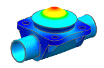
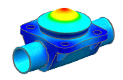

Mapping overview
Mapping is used to transfer results from a source model to another solver.
-
The FEM global coordinate system from the target model must be the same as in the source model.
-
Both models should be geometrically congruent but do not need to have the same mesh.
-
Mapped are written in a result file (*.bun).
General considerations
-
Temperature mapping creates associations between the element's centroid on the thermal model to the closest element on the target model.
-
If the nodes do not match, temperatures are interpolated using the element's CG.
Temperature mapping
|
|


Temperature results mapped onto a structural analysis displaying deformation results
-
Flow mapping associates the face of the fluid element source model to the closest nodes on the target model.
-
Static pressure and shear stress results are mapped to vector forces generated by the fluid on the surface of the target model.
Flow forces mapping
|
|
 
